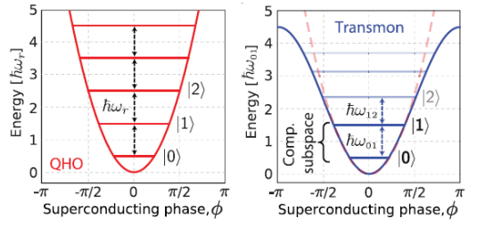

8. 比特频率¶
对于 LC 谐振电路， \(H=4E_Cn^2+\frac{1}{2}E_L\phi^2\) ，是 \(\phi\) 的抛物线函数。
！ 注意，该式是算符形式。
其中 \(E_C=e^2/(2C)\) 是将 Cooper 对中的每个电子加到 island 上的电荷能量， \(n=Q/2e\) 是 island 上附加的 Cooper 对数量。
！ 注，在上述定义中前后的单电子 / Cooper 的不一致，是该项前系数 “4” 的成因。
\(E_L=(\Phi _0/2\pi)^2/L\) 是电感能量, \(\Phi_0=h/(2e)\) 是超导磁通量子， 磁通减少量 \(\phi\equiv2\pi\Phi/\Phi _0\) 是穿过电感的规范不变相 “gauge-invariant phase”
谐振器频率 \(\omega_r=\sqrt{8E_LE_C}/\hbar=1/\sqrt{LC}\) ，能级分布 \(E_{k+1}-E_k=\hbar\omega_r\) 。

对于量子比特，替换电感能为约瑟夫森结 \(E_j\) 的能量， \(H=4E_Cn^2+E_j\cos{\phi}\) 。
\(E_j=I_C\Phi _0/2\pi\) ，表示单电子穿过结的隧穿能量。 \(I_C\) 是结的临界电流。
\(I_CR_n=\pi\Delta(0)/2e\) ， \(R_n\) 是结的常温电阻， \(\Delta(0)\) 是绝对零度下结的超导材料能隙。
比特频率 \(\omega_q=(\sqrt{8E_jE_C}-E_C)/\hbar\) ，非谐性 \(\alpha=\omega _{21}-\omega _{10}=-E_C\) 。
e.g. 求结的常温电阻
Al 的超导能隙为 180ueV ，取比特频率 5.3GHz ，非谐 -230MHz。
# 计算结的临界电流、常温电阻，以及比特电容
def fun_ic_rn_c(delt0,omeq0,alph0):
delt=delt0*E*um # ueV
omeq=omeq0*PI2*ghz
alph=alph0*PI2*mhz
ec=-alph*HBAR
ej=(HBAR*omeq+ec)**2/8/ec
phi0=H/(2*E)
ic=PI2*ej/phi0
rn=PI*delt/(2*E)/ic
c=E**2/(2*ec)
rnc=[0,0,0]
rnc[0]=ic/nm # nA
rnc[1]=rn/km # kohm
rnc[2]=c/fm # fF
return rnc
print(fun_ic_rn_c(180,5.3,-230))
[33.416602010491864, 8.46116366751796, 83.98971434530236]